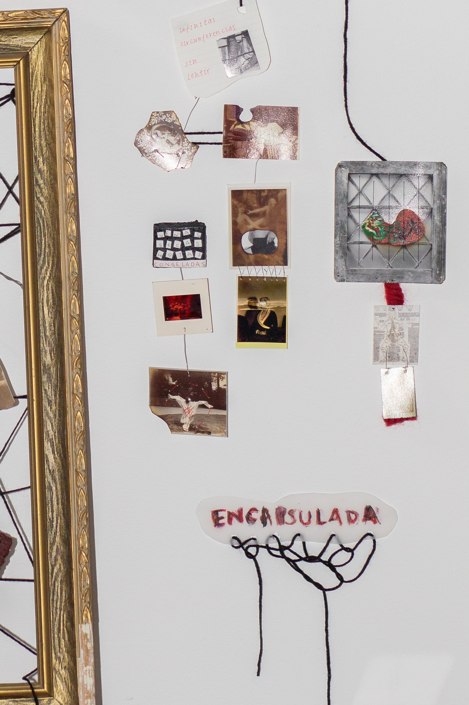
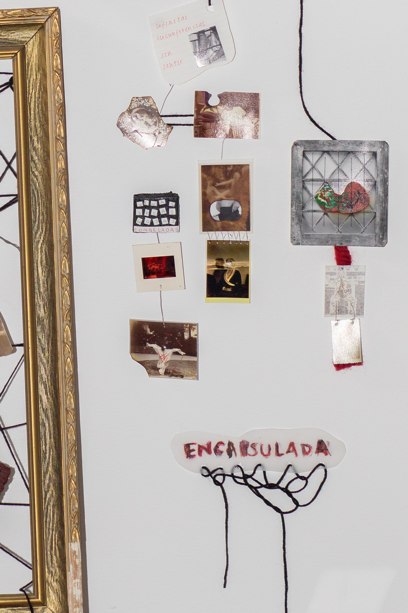

untitled (2022)
Martina Cavanna
Mixed Media Installation (Archival Photographs, Digital Video)
A line. An explorative non linear narrative, an intertwined deconstruction and a dismembering of the organic form of a woman. Addressing the complexity of being a forgotten woman artist in history. Feelings of rage and angst, frustration and repression. Conveying the fragility of the sensibility as well as the strength and capacity that was ignored by a male dominated world.
Martina Cavanna
Mixed Media Installation (Archival Photographs, Digital Video)
A line. An explorative non linear narrative, an intertwined deconstruction and a dismembering of the organic form of a woman. Addressing the complexity of being a forgotten woman artist in history. Feelings of rage and angst, frustration and repression. Conveying the fragility of the sensibility as well as the strength and capacity that was ignored by a male dominated world.
 
'untitled', 2022 (Detail), Image Courtesy the Artist

'untitled', 2022 (Detail), Image Courtesy the Artist